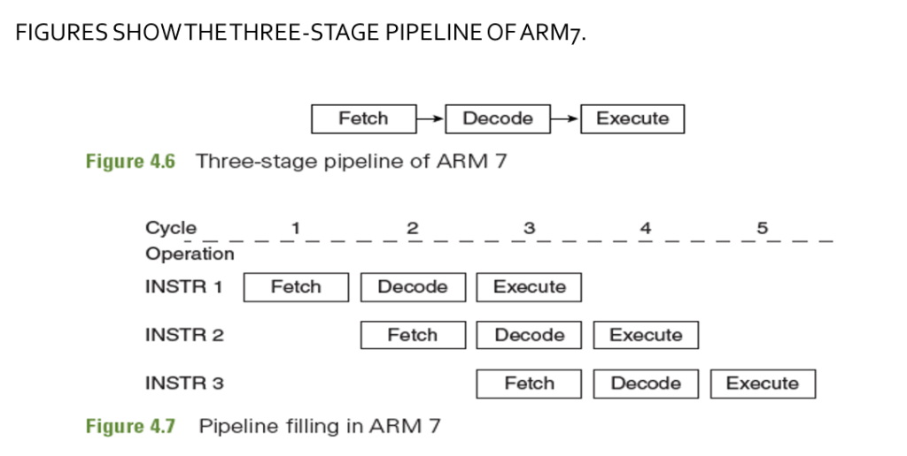
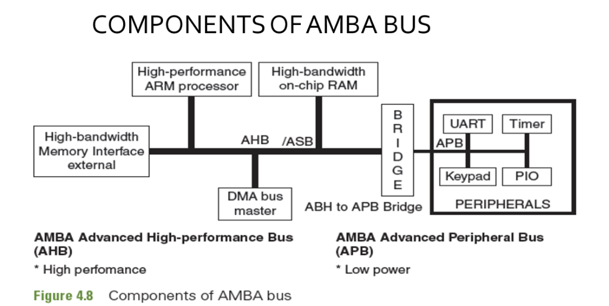
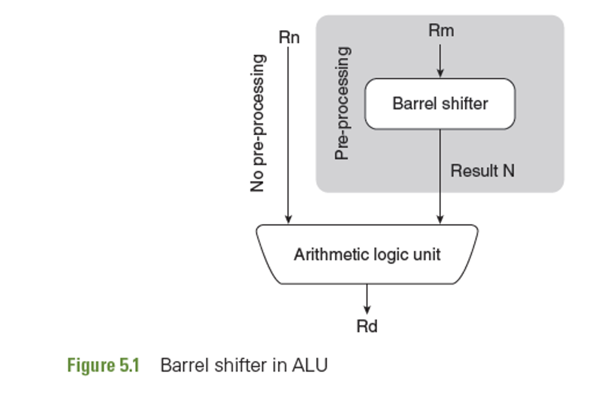
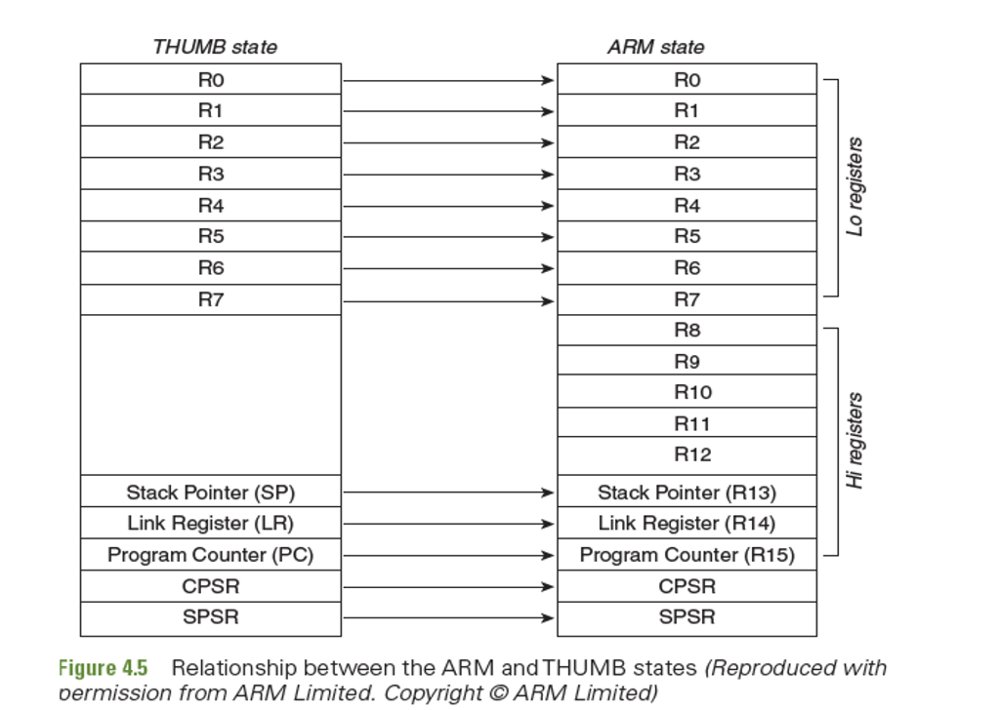
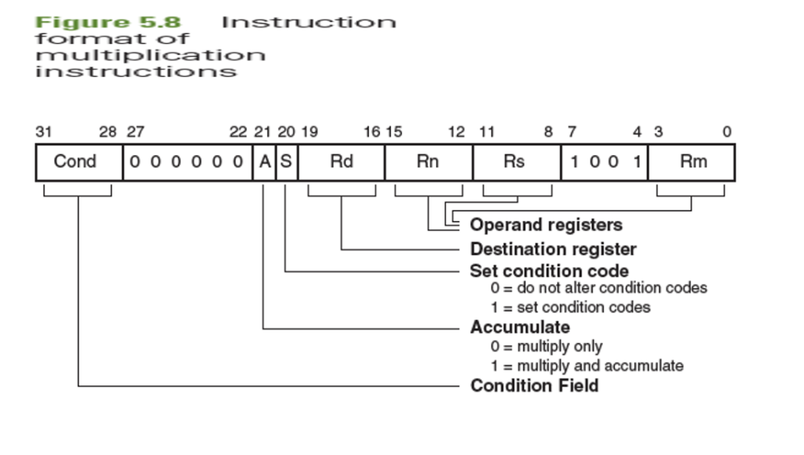

🎓 MSRIT/VTU Expert Faculty Study Portal | Assembly programming learning skills and algorithm tracing
The **ARM7TDMI** is a highly versatile 32-bit RISC core. The letters stand for: **T** (Thumb 16-bit compressed state), **D** (Debug support via JTAG), **M** (Fast 32-bit Multiplier), and **I** (EmbeddedICE logic module). To handle normal user tasks and system exceptions securely, the processor operates in one of **7 Operating Modes**:
SVC/SWI) instruction to request system services from the OS kernel.• SEE 2025 Q5(a): Write a block diagram of an ARM7 Processor. List the modes of operation in ARM7. (8 Marks)
• SEE 2023(O) Q5(a): Discuss the various modes of operation on an ARM7TDMI processor. (6 Marks)
ARM7TDMI operates in 7 modes: 1 unprivileged (User) and 6 privileged. Exception states trigger hardware mode transitions to protect system registers.
The ARM7 core has a total of **37 physical registers** (31 general-purpose 32-bit registers, and 6 status registers). However, at any single moment, only **18 registers** are visible to the programmer:
- **R0 to R12:** General-purpose registers.
- **R13:** Stack Pointer (SP), points to the active stack address.
- **R14:** Link Register (LR), holds the return address when calling a subroutine (using BL).
- **R15:** Program Counter (PC), holds the memory address of the instruction being fetched.
- **CPSR:** Current Program Status Register.
- **SPSR:** Saved Program Status Register.
To speed up exception handling, privileged modes map dedicated **banked registers** (shadow copies) that switch in automatically, replacing the User registers without saving them to the stack first.
• SEE 2024 Q6(a): Discuss with an appropriate diagram for the register set working towards various modes of an ARM 32 bit processor. (8 Marks)
• MAKEUP2023 Q5(b): Discuss the register set available in ARM architecture with necessary diagram. (8 Marks)
ARM7 has 37 registers, with 18 active at once. Banked registers in exception modes allow rapid context switching, while SPSRs automatically back up execution states during interrupts.
To speed up instruction throughput, ARM7 processors execute instructions using a **3-stage Pipeline**: 1. Fetch: The processor retrieves the instruction byte from external memory. 2. Decode: The instruction decoder identifies the operation and control lines needed. 3. Execute: The ALU performs the mathematical calculation or register modification. In a pipeline, these stages overlap: while Instruction 1 is executing, Instruction 2 is being decoded, and Instruction 3 is being fetched from memory. This achieves an average throughput of **1 instruction per clock cycle**. However, if a **branch instruction** is taken, the pre-fetched and decoded instructions in the pipeline become invalid and must be flushed (**pipeline hazard**), causing a 2-cycle execution penalty.

ARM7 pipelines Fetch, Decode, and Execute stages to run 1 instruction per cycle. Branch operations break this flow, flushing the pipeline and costing a 2-cycle penalty.
When an **exception** (an interrupt, memory abort, or software reset) occurs, the ARM7 processor automatically suspends its normal program execution and jumps to a specific, hardcoded location in memory called the **Exception Vector Table**. The Vector Table contains branch instructions pointing to the respective **Interrupt Service Routines (ISRs)**.
The hardware performs a strict sequence of steps automatically upon entering an exception, and the software must execute a corresponding return sequence to restore the main program state.
• SEE 2023 Q5(a): How does Arm processor handle Interrupts? List vectors of predefined interrupts. (8 Marks)
• MAKEUP2023 Q6(a): List and explain 8 interrupts in the vector table of the processor. (8 Marks)
• SEE 2023(O) Q6(a): List the steps involved in the way that the processor handles an exception. (8 Marks)
Exceptions trigger a hardware mode switch, backing up the CPSR in the SPSR, saving the return address in the LR, and branching to a dedicated address in the Vector Table.
In highly integrated SoCs, connecting all peripherals directly to the processor's main bus would slow down execution. High-speed modules (like RAM and flash) need wide, fast, pipelined data paths, while slow peripherals (like UARTs and GPIOs) only need simple, low-power connections. To solve this, ARM developed the **AMBA (Advanced Microcontroller Bus Architecture)** standard, which defines two distinct buses: 1. AHB (Advanced High-Performance Bus): A fast system bus that supports pipelining, wide transfers, and multi-master operations. It connects high-speed modules like the CPU core, SRAM, and DMA controller. 2. APB (Advanced Peripheral Bus): A slower, unpipelined, low-power bus designed for simple register-based configurations. It connects slower peripherals like timers, PWM, UART, and SPI. An **AHB-to-APB Bridge** acts as a buffer between the two buses, matching data widths and clock speeds.

• SEE 2024 Q5(a): Discuss on how the AMBA processor specifies the use of AHB & APB bus components. (8 Marks)
• SEE 2025 Q5(c): Discuss on how the AMBA processor specifies the use of AHB & APB bus components. (6 Marks)
• MAKEUP2023 Q6(b): With a neat diagram, define components of AMBA bus. (7 Marks)
• SEE 2023(O) Q5(b): Discuss on how the AMBA processor specifies the use of AHB & APB bus components. (6 Marks)
AMBA optimizes SoC traffic by splitting it between the high-speed AHB bus (for CPU, RAM, and DMA) and the low-power APB bus (for slower peripherals like UART and GPIO).
The CPSR (Current Program Status Register) is a highly critical 32-bit register. It tracks status flags, interrupt enabling masks, and the active operating mode. SPSR is the shadow copy used to back up CPSR during exceptions.
CPSR Bit Allocation Regions:
• SEE 2023 Q4(b): Explain the current program state of an ARM7TDMI if the CPSR had the value 0xF00000D3. (7 Marks)
CPSR controls and monitors CPU execution status using distinct bit groups for math flags (N, Z, C, V), interrupt masks (I, F), state (T), and operating mode bits.
To control the execution flow in assembly, we use branch instructions:
- Branch (B): Performs a simple jump to a target label. The PC is overwritten with the target address, flushes the pipeline, and continues execution. Equivalent to goto in high-level languages.
- Branch with Link (BL): Performs a subroutine call. Before jumping to the target label, the address of the next sequential instruction (return address) is automatically backed up in the Link Register (LR / R14). To return, the subroutine ends with MOV PC, LR or BX LR.
• SEE 2023(O) Q6(b): Discuss how the instruction B & BL give the power of decision making in an ARM program operation. (6 Marks)
B instruction changes execution flow instantly. BL performs subroutine calls, automatically backing up the return address in the LR to permit structured function calls and returns.
Almost all ARM7 data processing and branch instructions can be conditionally executed using a 2-character mnemonic suffix. These suffixes evaluate the state of the CPSR flags (N, Z, C, V) before running the instruction. If the flags do not match the condition, the instruction acts as a NOP (No Operation) and is skipped in 1 cycle, avoiding pipeline flushes.
10 Common Conditional Codes Table:
| Suffix | Condition Name | CPSR Flag State | Meaning |
|---|---|---|---|
EQ | Equal | Z == 1 | Equal / Zero result |
NE | Not Equal | Z == 0 | Not equal / Non-zero result |
CS / HS | Carry Set / High or Same | C == 1 | Unsigned >= operation |
CC / LO | Carry Clear / Lower | C == 0 | Unsigned < operation |
MI | Minus | N == 1 | Negative result |
PL | Plus | N == 0 | Positive or zero result |
VS | Overflow Set | V == 1 | Signed arithmetic overflow occurred |
VC | Overflow Clear | V == 0 | No signed arithmetic overflow |
HI | Higher | C == 1 AND Z == 0 | Unsigned > operation |
LS | Lower or Same | C == 0 OR Z == 1 | Unsigned <= operation |
• MAKEUP2023 Q5(c): List any ten conditional codes with suffix, flags and meaning in assembly programming of ARM7. (5 Marks)
ARM instructions support conditional suffixes (EQ, NE, CS, CC, etc.) that inspect CPSR status bits, executing operations only if conditions are met to avoid branching overheads.
ARM architectures can be integrated with optional hardware modules to serve diverse markets. Key extensions include: - **T (Thumb 16-bit compressed state):** Decompresses 16-bit instructions on-the-fly, reducing program size. - **D (JTAG Debugging):** Permits debugging hardware directly on the PCB. - **M (High-speed Multiplier):** Specialized internal hardware multiplier. - **I (EmbeddedICE):** Logic debugger module integrated onto the silicon. - **E (Enhanced DSP Instructions):** Adds arithmetic commands to speed up calculations on audio/signals. - **J (Jazelle):** Hardware execution acceleration of Java bytecode.


• SEE 2023 Q5(b): List and explain seven optional features of ARM processor. (7 Marks)
• SEE 2024 Q6(b): Discuss the additional features of the ARM7 processor that are accepted in the embedded market. (6 Marks)
Optional ARM architectural tags (T, D, M, I, E, J) define targeted hardware modules like Thumb code compression, signal processing (DSP), or physical debugger logic.
ARM assembly provides robust instructions to manipulate bit patterns:
- AND: Performs a bitwise logical AND operation.
- BIC (Bit Clear): Performs a logical AND on the first operand with the **bitwise NOT** of the second operand, clearing bits.
- ANDS: Performs AND and updates N and Z condition flags.
Instruction Constraints & Faults:
- **Immediate Range:** MOV R0, #300 is invalid because ARM's 12-bit immediate field only permits values that can be formed by rotating an 8-bit value (0-255) by an even number of bits. 300 cannot be formed this way.
- **Illegal Shifts:** ROL R0, #4 is invalid because ARM lacks a native circular shift right-to-left instruction (only ROR exists).
- **Illegal Registers:** MUL R0, R0, R15 is invalid. In ARM7, the Program Counter (PC/R15) cannot act as a multiplier or multiplicand in multiplication instructions.

• SEE 2023 Q6(c): Find faults in the following instructions, if any and suggest a remedy: i. MOV R0, #300 ii. ROL R0, #4 iii. LDMH R0, {R1-R5} iv. MUL R0, R0, R15. (8 Marks)
• SEE 2024 Q5(b): Find the output of the following instructions given that R3= 0xFF, R2=0x14: i. AND R4,R2,R3 ii. ANDS R6,R2,R3 iii. BIC R5,R2,R3. (6 Marks)
Logic instructions (AND, BIC) perform bit manipulations, governed by ARM rules like immediate value ranges, multiplier operand limits (R15 prohibited), and shift limitations.
Trace the instruction pipeline cycles showing a branch instruction flush. Consider the assembly snippet:
0x0000: ADD R1, R2, R3
0x0004: B 0x1000 ; Branch to 0x1000
0x0008: SUB R4, R5, R6 ; Fetched but flushed!
0x000C: AND R7, R8, R9 ; Fetched but flushed!| Clock Cycle | Fetch Stage | Decode Stage | Execute Stage | Action / Status |
|---|---|---|---|---|
| **Cycle 1** | ADD R1, R2, R3 | - | - | First fetch |
| **Cycle 2** | B 0x1000 | ADD R1, R2, R3 | - | Parallel fetch & decode |
| **Cycle 3** | SUB R4, R5, R6 | B 0x1000 | ADD R1, R2, R3 | ADD executes normally |
| **Cycle 4** | AND R7, R8, R9 | SUB R4, R5, R6 | B 0x1000 | **Branch executes! Pipeline Flushed!** |
| **Cycle 5** | LDR R0, [R10] (at 0x1000) | - | - | Reloading pipeline (Bubble cycle 1) |
| **Cycle 6** | Instruction 2 (at 0x1004) | LDR R0, [R10] | - | Reloading pipeline (Bubble cycle 2) |
| **Cycle 7** | Instruction 3 (at 0x1008) | Instruction 2 | LDR R0, [R10] | Execution resumes at target address! |
Write an assembly program to add the first N even numbers and store the result in memory (SEE 2025 PYQ):
AREA SumEven, CODE, READONLY
ENTRY
MOV R0, #10 ; Let N = 10
MOV R1, #0 ; R1 will hold the running sum
MOV R2, #2 ; R2 is the first even number (2)
loop ADD R1, R1, R2 ; Sum = Sum + even_number
ADD R2, R2, #2 ; Next even number = current + 2
SUBS R0, R0, #1 ; Decrement count N, set flags
BNE loop ; Repeat until N = 0
LDR R3, =RESULT ; Load pointer to destination address
STR R1, [R3] ; Store sum in memory
stop B stop ; Infinite loop to halt execution
AREA DataArea, DATA, READWRITE
RESULT DCD 0 ; Allocate 4 bytes in RAM
ENDCalculate outputs for shift operations (SEE 2025/2023 Old Exam numericals):
Answer:
ARM7 contains 37 registers, organized in overlapping banks. Out of these, 31 are general-purpose 32-bit registers (R0-R15) and 6 are status registers (CPSR and 5 banked SPSRs). The physical registers switched during switches between User, FIQ, and IRQ modes are detailed below:
| Registers | User / System Mode | FIQ Mode (Fast Interrupt) | IRQ Mode (Standard Interrupt) |
|---|---|---|---|
| R0 to R7 | Unbanked (Shared) | Unbanked (Shared) | Unbanked (Shared) |
| R8 to R12 | R8 to R12 | R8_fiq to R12_fiq (Banked) | R8 to R12 (Shared) |
| R13 (SP) | R13 (SP) | R13_fiq (Banked SP) | R13_irq (Banked SP) |
| R14 (LR) | R14 (LR) | R14_fiq (Banked LR) | R14_irq (Banked LR) |
| R15 (PC) | PC (Shared) | PC (Shared) | PC (Shared) |
| CPSR | CPSR | CPSR | CPSR |
| SPSR | None | SPSR_fiq (Banked) | SPSR_irq (Banked) |
Answer:
(i) MVN R7, R0 (Move Not):
This instruction performs a bitwise logical NOT operation on R0 and stores the inverted bits in R7.
R0 = 0x12345678 = 0001 0010 0011 0100 0101 0110 0111 1000 binary
Inverting every bit:
R7 = 1110 1101 1100 1011 1010 1001 1000 0111 binary = 0xEDCBA987
*Flags:* CPSR flags are unchanged because the instruction lacks the 'S' suffix (it is MVN, not MVNS).
(ii) ADDS R6, R0, R1 (Add and Update Flags):
This instruction adds R0 and R1, storing the result in R6 and updating the CPSR flags (N, Z, C, V) based on the result.
R0 = 0x12345678
R1 = 0xD5678007
Performing hexadecimal addition:
0x 1 2 3 4 5 6 7 8
+ 0x D 5 6 7 8 0 0 7
──────────────────────
0x E 7 9 B D 6 7 F
R6 = 0xE79BD67FAnswer:
1. Hardware Exception Entry Sequence: When an exception (like an IRQ or Abort) is asserted, the ARM7 hardware executes these steps automatically:
2. Software return adjustments: Depending on the exception type, the executing instruction might have already completed, or needs to be retried. The LR must be adjusted before being copied back into the PC:
MOVS PC, LR)SUBS PC, LR, #4)SUBS PC, LR, #8)Answer:
The Advanced Microcontroller Bus Architecture (AMBA) standard defines two separate buses inside a System-on-Chip (SoC) to match diverse component speed and power requirements:
AHB-to-APB Bridge: Slow peripherals cannot hook directly to the high-speed system bus. A bridge acts as an AHB slave, latching address/data from the CPU, translating the high-speed pipelined system protocols into simple, slow APB signals, and returning the results to the CPU. This isolates peripheral overhead from core memory operations.
Answer:
The bubble sort algorithm compares adjacent elements and swaps them if they are in the wrong order. This process is repeated (N-1) times for N elements. Below is the complete, working ARM assembly code:
AREA BubbleSort, CODE, READONLY
ENTRY
LDR R0, =SIZE ; Load address of array size
LDR R0, [R0] ; R0 = N (array size)
SUB R0, R0, #1 ; Outer loop counter = N - 1
outer LDR R1, =ARRAY ; Load start address of array
MOV R2, R0 ; Inner loop counter = Outer count
MOV R5, #0 ; Flag to detect if swap occurred (0 = no swap)
inner LDRB R3, [R1] ; Load current element ARRAY[i]
LDRB R4, [R1, #1] ; Load next element ARRAY[i+1]
CMP R3, R4 ; Compare ARRAY[i] and ARRAY[i+1]
LSLE R1, R1, #0 ; Conditional delay / Dummy statement
STRBGT R4, [R1] ; Swap: Store smaller in ARRAY[i]
STRBGT R3, [R1, #1] ; Swap: Store larger in ARRAY[i+1]
MOVGT R5, #1 ; Set swap flag to 1 if swap occurred
ADD R1, R1, #1 ; Point to next element
SUBS R2, R2, #1 ; Decrement inner loop counter
BNE inner ; Repeat inner loop
CMP R5, #0 ; Check if swap occurred in this pass
BEQ stop ; If no swap, array is sorted, halt!
SUBS R0, R0, #1 ; Decrement outer loop counter
BNE outer ; Repeat outer loop
stop B stop ; Infinite loop to halt
AREA DataArea, DATA, READWRITE
SIZE DCD 5 ; Size of array
ARRAY DCB 0x34, 0x12, 0xA5, 0x56, 0x02 ; Array of 5 bytes
ENDAnswer:
MOV R0, #300LDR to let the assembler load the constant from a literal pool:
LDR R0, =300 ; Valid remedyROL R0, #4MOV R0, R0, ROR #28 ; Valid remedyLDMH R0, {R1-R5}LDMH is an invalid mnemonic suffix. Block memory transfers (LDM/STM) only support IA, IB, DA, DB suffixes.LDMIA (Increment After) or another valid block transfer suffix:
LDMIA R0, {R1-R5} ; Valid remedyMUL R0, R0, R15MOV R4, R15
MUL R0, R0, R4 ; Valid remedyAnswer:
The ARM7TDMI processor operates in two execution states: the 32-bit **ARM state** (executing standard 32-bit wide instructions) and the 16-bit **Thumb state** (executing compressed 16-bit instructions to maximize code density in restricted memories).
ARM-Thumb Register Mapping Architecture:
Key Register Set Relationships:
ADD, CMP, and MOV). This reduces the instruction encoding size.